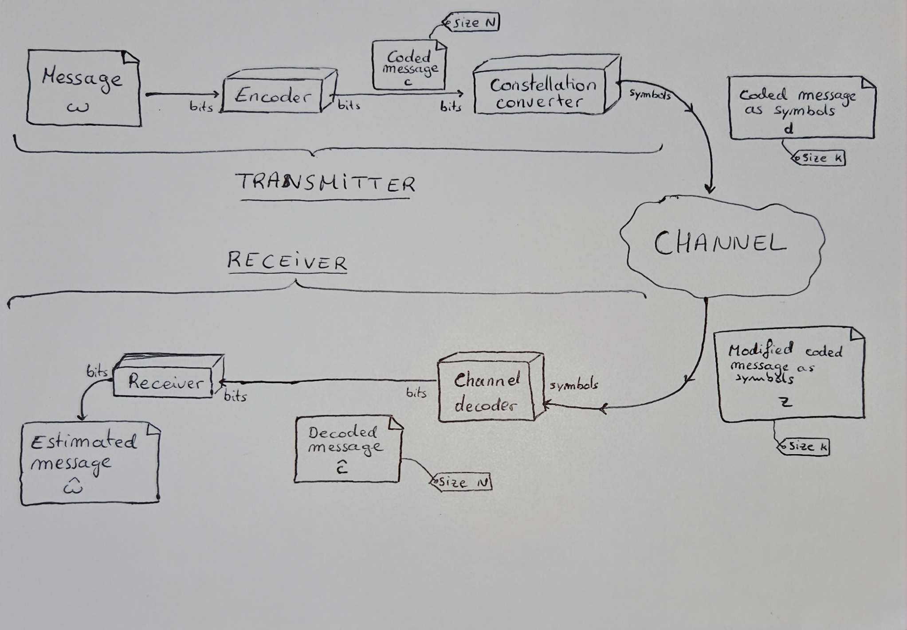

LDPC means Low-density parity-check. This comes for the fact that there's a low density of 1's compared to the amount of 0's in its parity-check matrix.
The amount of 1's in each columns and rows are greatly less than the dimension of the initial code, i.e.
The LDPC codes belong to the family of linear block codes.
The Tanner graph is a representation of the parity matrix. It composed of v-nodes (variable nodes) and c-nodes (check nodes). Each 1 in the parity matrix leads to a connection in the Tanner graph. The low-density property leads to few connections in the Tanner graph. This property greatly improves the efficiency of LDPC decoding.
At each iteration, every v-node sends a message to a c-node which answers. The amount of messages depends on
The complexity of an optimal decoder such as the ML (maximum-likelihood) is expressed as
The hard decoding uses binary values while the soft decoding adds information about the probabilities of getting a 0 and 1. In terms of computation complexity and decoding performance, the hard decoding requires less computation powers but leads to poorer performances. Thus, the soft decoding should be a preferred solution when the environment permits it.
Even though the LDPC codes are non optimal, the small BER (Binary Error Rate) comes from the iterative algorithm which propagates the information in the whole graph. After the first iteration, the information is shared between the connected v-nodes and c-nodes. After the second iteration, the v-nodes which now holds information about its neighbors, propagates this information though the graph edges. After a certain amount of iterations, the information is spread among the whole graph and thus correct most errors.

The APP (a posteriori probabilities) of the bits for an AWGN channel when the constellation is a BPSK is :
with
This is valid iff the bits are equiprobable a priori.
In order to measure the BER of a LDPC, one can make tests on known messages.
Let's have x = [ ... ] being a known message.
z = awgn_channel(x, variance) is the output of the channel when x is inputted.
x_est = SOFT_DECODER_GROUPE1(z, H, p, MAX_ITER) is the estimated message after the LDPC soft decoding that occurs when receiving the channel output.
Because of the passage though the channel, there's a non-nil probability that x_est is different from x.
One can estimate the BER as being the ratio between the error made on the total amount of bits in the original message.
Since we know the original message x, the amount of errors made is the amount of bits that differs between x_est and x. One can be computed as such : err_amount = len(xor(x, x_est)).
And then, ber = err_amount / len(x).